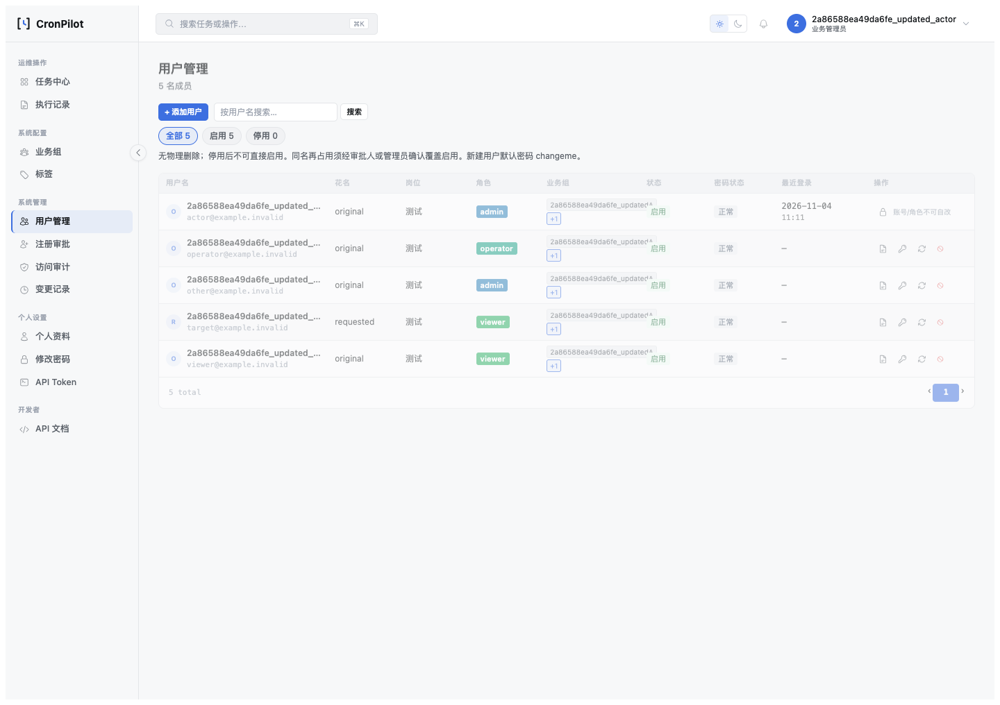
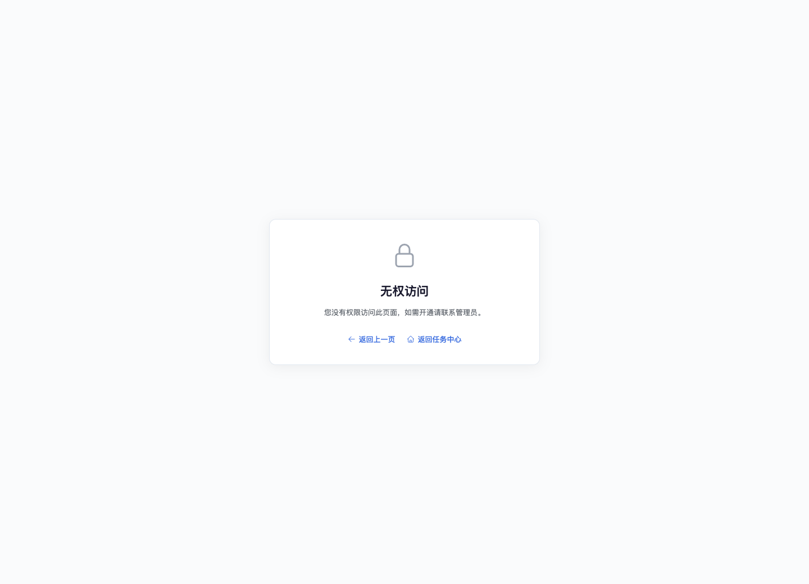

RBAC 缓存失效与提交后处理边界统一修复设计
rev.2 · 2026-11-04 · 用户确认后已实施。下文保留原设计依据，实际结果见实施复盘；本批没有修改发布工作流。
1. 问题、证据与准确性边界
部分 RBAC 服务在业务 commit 成功后，仍读取已过期的 ORM 属性来构造缓存失效参数、审计参数或返回值。SQLAlchemy 可能为主键或用户名等属性重新查询；若读取失败，业务已经提交，却可能中断缓存失效或响应。外层缓存/审计函数的异常保护无法捕获调用前的参数求值异常。
用户编辑降权探针已证明：目标角色持久化为 viewer，旧 Token 仍由本进程缓存解析为 operator；另 5 个专用内存探针分别覆盖停用、管理员重置密码、改组、自行改密和签发 Token。前 3 个会跳过缓存失效，后 2 个先清缓存但后续响应仍报错。上述结论是 commit 成功且故意拒绝随后 ORM 列加载时的复现，不是普通操作必然失败。
同名覆盖启用、注册审批和旧 update_user 目前仅完成静态确认，实施第一批必须补充真实场景探针后才能关闭；旧 update_user 在 app/ 未查到调用方，不能认定是当前页面入口。具体证据见同类排查、5 个探针结果及用户编辑降权探针。
这涉及操作提交完成后新请求读取旧缓存，区别于用户认可的“有权限时发起的在途操作允许完成”。本设计修复当前进程内已发现的失效中断；不宣称解决多 worker 缓存同步、缓存函数自身故障或配置关闭 API 鉴权时的访问策略。
2. 根因与测试漏洞
- 将可过期 ORM 实体当作跨 commit 的稳定返回对象。主键已知不等于访问 user.id 永远不执行 SQL。
- 必要缓存失效排在审计参数求值之后，使用户名加载失败阻断权限缓存更新。
- write_audit_log 自身会 commit 或 rollback，使其后的 ORM 返回字段也可能再次过期；只修第一次 commit 后的 ID 不足以覆盖完整链路。
- 已有成功路径测试使用健康内存库，部分用 mock 替代缓存函数；没有同时验证“真实 commit 已完成、随后列读取不可用、真实缓存已失效、响应仍正确”。
3. 设计原则与行为契约
推荐：在事务仍正常、数据已 flush 且业务写入已完成时，构造该操作需要的最小标量结果；commit 后只使用这些稳定值处理本进程缓存、已有独立审计及响应。逐函数调整，不新增统一事务装饰器，不抽象所有入口为一个大框架。
| 阶段/结果 | 必须行为 | 边界 |
|---|---|---|
| 校验或写入失败、已知未提交 | 保留原拒绝及 rollback；不返回预先生成的 Token、不产生成功审计 | 不把待提交快照当成成功事实 |
| commit 正常返回 | 对该用户执行现有缓存失效，再完成已有独立审计并返回该次操作结果 | 不反向写回旧权限，不再次轮换 Token |
| commit 抛异常 | 沿用各入口现有返回结构与错误分类；用户编辑保留 commit_unknown；对尝试改变权限/凭据的已知用户 ID 做保守缓存失效，不能让 cleanup 异常阻断它 | 缓存删除不表示已提交；不自动重试写入、不返回 Token。本批不统一旧入口的错误文案或新增 outcome |
| 独立审计失败 | 维持 write_audit_log 的已有 best-effort 行为，日志记录，不逆转已提交业务；缓存已先失效 | 不得把用户编辑事务内审计改成 best-effort |
| 缓存失效函数自身失败 | 维持现有保护及记录，不误称实现了可靠跨进程撤权 | 是否引入更强缓存可靠性策略另立设计，不偷偷改变鉴权协议 |
旧入口 commit 异常下的文案可能不足以精确表达结果不明，这是既有局限。本设计仅消除已发现的额外读取依赖、并保守清理缓存，不将本批包装成完整的提交幂等或撤权一致性改造。
4. 逐入口方案及作用域
| 函数 | 提交前保存的最小值 | 提交后处理 |
|---|---|---|
| update_user_management | 已有整数 user_id、auth_changed/auth_attempted、effective_change_set | 以 user_id 失效；资料-only 仍零认证副作用；用户编辑审计继续原事务 |
| set_user_active | user_id、用户名、目标状态和已校验缘由 | 先失效，再用稳定参数写现有审计和构造消息 |
| trigger_password_reset | user_id、用户名 | 先失效，再写独立审计；默认密码及强制改密语义不变 |
| set_user_groups | user_id、用户名、是否发生有效组变更 | 不新增认证版本或 Token 轮换；维持原有组写入策略，先失效后审计 |
| change_own_password | user_id、用户名及已有审计参数 | 失效、审计、响应均不读取 user；保留旧密码校验和新密码规则 |
| issue_user_api_token | user_id、用户名、本次生成 Token、过期时间 | 仅 commit 正常返回后失效并返回本次 Token；不在审计或日志写入 Token |
| create_user（覆盖启用） | existing 的原 ID、用户名、reactivated、覆盖前后审计投影 | 先失效，再写原有覆盖审计和响应；同一用户行及旧 ID 保持 |
| create_user（新建） | flush 后生成的新 ID、用户名、reactivated=False | 审计后返回预存 ID；不新增无依据的权限或重置步骤 |
| approve_registration | flush 后用户 ID、申请 ID/用户名、reactivated、已有 before/after 投影 | 失效、审计、消息均不读取 user、target 或 req；申请与用户仍在原事务内提交 |
| 旧 update_user | user_id、用户名、既有变化事实 | 同步消除危险读取并测试直接服务调用；不新接路由、不扩大该旧方法策略 |
这不是要求深拷贝完整实体：只保存用于失效、既有审计及返回的必要标量/纯字典。ID 的来源必须是已知函数参数或真实 flush 结果；禁止根据用户名猜 ID，禁止读取未 flush 的新用户 ID。快照构建位于现有事务错误保护范围内，失败时按未提交处理。
同步检查 app/rbac/views.py 和 app/api/views.py 的调用后路径：原生跳转优先使用已解析 ID，业务成功时使用服务返回的稳定结果；不得在用户编辑响应、批量审批结果拼装或 Token 响应中重新引入过期对象读取。逐个读取实际调用方后再修改，不能全局替换 user.id。无产品模板、CSS、JS、API 字段与现有成功/拒绝文案变更，故本设计不涉及页面布局 Before/After。
5. 安全性、合理性及备选评价
- 事务合理性：快照是该事务计算的结果，不替代授权、行锁、三方比较和约束。保留业务提交次数及原有事务内审计；独立审计仍有原本的第二事务，不承诺二者原子。
- Token 准确性：返回自己刚提交的 Token，不能提交后再查“最新 Token”，否则另一并发重置可能让调用方获得另一操作生成的值。若之后其他操作使该 Token 失效，按既有并发语义处理，不自动重发或覆写。
- 凭据保护：Token 只存请求内局部变量，不写日志、审计 detail、错误信息、HTML 附加属性或磁盘证据。API Token 响应保留既有登录/权限保护；不新增访问角色。
- 缓存顺序：只把本进程失效提前到独立审计之前，不在 commit 前清理缓存，避免其他请求在事务尚未生效时重建旧缓存。commit 异常路径的保守失效同样不是提交成功证明。
- 不采用全局 expire_on_commit=False：会改变整个 ORM 新鲜度及并发契约，影响远大于当前问题。
- 不采用刷新或新查询：仍依赖故障中的数据库，且可能混入后续事务结果。
- 不采用 catch-all 返回成功：会混淆实际提交失败、缓存失败及审计失败；应消除不必要的读取，而不是掩盖错误。
- 不采用分布式缓存重构：当前问题有局部、可证伪的修复方式；进程间即时撤权、Token cache TTL 和并发缓存重填竞态不在本批保证内。
6. 范围、分批及实施门槛
范围是上述服务、实际受影响调用方、专用回归测试及交付文档。无迁移、依赖升级或发布工作流调整。其他 Dashboard/文档目录/文件缓存未发现相同机制，不在本批重写。自动发布问题仍按用户决定暂不处理。
- B0 基线与未复现场景：冻结工作区指纹；大型 services/views 文件先 AST 定位函数/异常边界；为覆盖启用、普通新建、普通审批和覆盖审批补真实事务探针，明确旧 update_user 的可达性。没有完成对应复现与健康路径基线，不关闭该入口。
- B1 已复现的认证入口：用户编辑、停用、重置密码、改组、自行改密、Token 签发逐入口修改并测试；每次只完成一个入口的捕获、顺序和返回契约后进入下一个。
- B2 创建及审批：处理新 ID 的 flush 时机、普通/覆盖分支、拒绝申请及批量审批调用方；保持原申请-用户事务及审计内容。
- B3 全链路与复盘：相关回归、角色正反路径、SQLite/MySQL、文档及发布边界核验；形成逐入口七项复盘及可提交差异，不混入此前其他未提交修复。
7. 验收矩阵与防回归
- 健康路径：逐入口断言原返回字段、角色/组/状态、密码规则、认证版本、Token 生成次数和审计次数。资料-only、无变更、已应用、拒绝和缺字段分支不得新增写入及认证副作用。
- 核心故障控制：保留默认 ORM 过期行为，在真实业务 commit 正常返回后拒绝 ORM 列加载；验证服务仍按已知结果返回、不重复写业务、不反向恢复旧值。测试必须覆盖后续独立审计 commit/rollback 后的返回字段。
- 真实缓存：预热旧 Token；成功停用/改密/降权/改组后，以新请求验证旧 Token 不再被本进程缓存放行，新 Token 权限符合新角色。测试明确配置非空全局 API Token 且请求不携带它，避免“配置关闭鉴权时全局放行”的既有模式污染断言。
- 三种提交故障：flush 前失败、真实提交前失败、真实 commit 后再抛错分别覆盖。未提交时不得返回快照 Token/成功审计；提交结果不明维持各入口既有结构，保守缓存失效及 cleanup 不能因二次异常被跳过。
- 附属失败：真实失效函数执行后，再注入独立审计失败，确认已提交业务和返回 Token 不依赖额外 ORM 查询；单独注入缓存函数自身错误，记录现有策略及残余风险，不能借此声称 fail-closed 或跨进程立即撤权。
- 否定校准：恢复一个入口的 user.id、恢复缓存前的 user.username 求值、恢复审计后的 user.api_token 读取，分别应使对应测试失败。防止测试因为关闭过期、提前访问并热身对象或全部 mock 而自洽全绿。
- 后端及交互：SQLite 内存单测；真实 MySQL 专用 schema（只清理自身资源），验证提交和行锁语义；目标角色浏览器覆盖编辑、停用、重置、审批的正向与拒绝，截图不含凭据。先检查已运行的 DB/容器；不得启动会恢复共享开发库调度容器的 Docker daemon。
.venv-py311/bin/python -m unittest tests.test_user_edit_change_set tests.test_user_edit_scope_projection tests.test_user_edit_sqlite_boundary tests.test_user_reactivation tests.test_api_scope_s6 -v .venv-py311/bin/python scripts/check_route_completeness.py --check app/rbac/views.py .venv-py311/bin/python scripts/smoke_routes.py --check .venv-py311/bin/ruff check app/ .venv-py311/bin/python scripts/check_doc_completeness.py --check .venv-py311/bin/python scripts/check_doc_links.py --check .venv-py311/bin/python scripts/html_docs_to_markdown.py --check
确认实施时新增专用 tests/test_rbac_postcommit_boundary.py，精确命令随实际类名记录；上列为验收计划，未在本设计阶段执行。现有探针是问题证据，不能代替正式防护测试。
8. 主要风险、回滚及完成定义
- 快照过早：缺 ID、旧 Token、旧角色。防护：写入及必要 flush 后捕获，逐入口检查捕获位置与实际提交值。
- 浅拷贝携带 ORM：保存字典不等于纯快照。防护：仅标量及既有纯值审计投影，禁止 ORM 对象、延迟关系和 Session 进入提交后载荷。
- 审计退化：移动审计会破坏用户编辑原子契约。防护：用户编辑的 RbacAuditLog 仍在业务事务；其他入口只调整稳定参数和失效顺序。
- 重试重复副作用：补救时再次轮换 Token 或重复审批。防护：本设计不自动重试业务；已提交与结果不明分开核验。
- 把失效保证说大：本地失效不代表多 worker 已失效，也不能消除所有并发重填。文档、测试与交付说明均须保留这一边界。
回滚为代码回退，不增加迁移或批量数据恢复；不得把已提交的用户变更恢复为旧值。发现新回归应停止后续批次、保留测试证据。完成要求：逐入口验收表、原有及新增测试通过、两后端与角色交互结果、文档同步、可验证环境及七项复盘齐备；不能仅凭改动行数少或单测通过宣称无风险。
9. 代码依据及本轮实际工作
本方案写入前已读取 app/rbac/services.py 的 _auto_issue_token、_overwrite_disabled_user_inplace、write_audit_log、全部所列服务的提交/异常/返回分支；app/api/__init__.py 的缓存命中及 Token 守卫；app/rbac/views.py 和 app/api/views.py 的调用位置。_auto_issue_token 直接给模型字段赋值，不提交；新 ID 须真实 flush；write_audit_log 自行 commit/rollback 且捕获异常，因此提交后的返回值必须在它之前已稳定保存。以上 API 细节均有代码依据。
本轮仅形成独立设计及索引；没有修改业务逻辑、缓存策略、API、测试实现或运行中的用户权限。此前 6 个服务探针结论沿用各自证据，3 个静态风险入口尚未新复现，MySQL 和浏览器验收均是确认后的计划。
10. 实施结果与七项复盘
- Bug 定位：9 个 RBAC 服务及创建/审批分支在 commit 或独立审计后，仍读取过期对象，导致缓存失效或响应被不必要的 SQL 阻断。
- 根因：事务结束后继续用 ORM 实体承载审计和响应，忽略参数求值发生于辅助函数异常保护之外，以及独立审计会再次结束事务。
- 测试漏洞：健康数据库和模拟缓存不能覆盖提交已成功但列加载失败；新建及审批分支原先未对此做独立故障验证。
- 修复：事务内捕获必要 ID、用户名、审批投影及本次 Token 值；提交后使用标量失效缓存，先于独立审计；原生用户编辑跳转使用已解析 ID。保留用户编辑事务内审计及原有返回结构。已知用户的提交异常路径保守失效，并用 rollback_or_invalidate 避免清理异常阻断；普通新建失败不返回预存 ID 或 Token。
- 防护测试：新增 tests/test_rbac_postcommit_boundary.py。修复前 3 个测试方法的 12 个分支失败，包含普通新建、同名覆盖、普通审批和覆盖审批；修复后最终 5 项专用测试在 SQLite 与 MySQL 通过。包含真实 commit、默认过期、审计失败、提交前/提交后抛错及 cleanup 失败、不泄露未确认 Token；新 HTTP 请求确认降权前 200、旧 Token 401、新 Viewer Token 写操作 403。
- 同类排查：已处理统一设计列出的 9 个函数，包括旧 update_user 的直接服务调用；用户编辑原生跳转一并使用稳定 ID。其他类型缓存沿用专项排查结论，未进行分布式缓存改造或声明其全面正确。
- 预防方案：默认过期不关闭；新增回归测试直接拒绝提交后列加载、使用真实缓存，并覆盖审计结束事务后的响应。doc/qa/evidence/rbac-cache-repair-2026-11-04/negative_controls.py 在内存中恢复危险 ID/用户名/Token 读取，三个反例均被检出；命令 PYTHONPATH=. .venv-py311/bin/python doc/qa/evidence/rbac-cache-repair-2026-11-04/negative_controls.py。该措施可由第三方重现，且不修改实现文件。
实际验证：相关回归 139 项通过（在最后新增 HTTP 检查前运行）；专用测试最终 5 项通过；MySQL 13 项事务验证和 5 项专用测试通过；隔离浏览器 27 场景通过；86/86 路由及 Ruff 通过。本批没有重跑全量 discovery，不将此前全量结果冒称为本次运行。专用容器未挂载开发数据，验证后已移除。
结构化验收 · MySQL 事务结果 · 浏览器摘要。
真实浏览器管理员保存和 Viewer 反向路径：


本地自证：服务已重启，登录页 HTTP 200，浏览器 POST 登录成功；可用本地 admin 及 conf.ini 中 login_pwd 登录。验收可查看下方管理员保存与 Viewer 拒绝截图；故障探针使用隔离库，不对真实账号注入。保留边界：当前进程缓存函数自身失败、其他 worker 的旧缓存及并发缓存重填不在本修复保证内；旧入口提交异常文案未统一。没有全局关闭 ORM 过期、没有自动重试业务，没有更改权限策略或 API 字段。